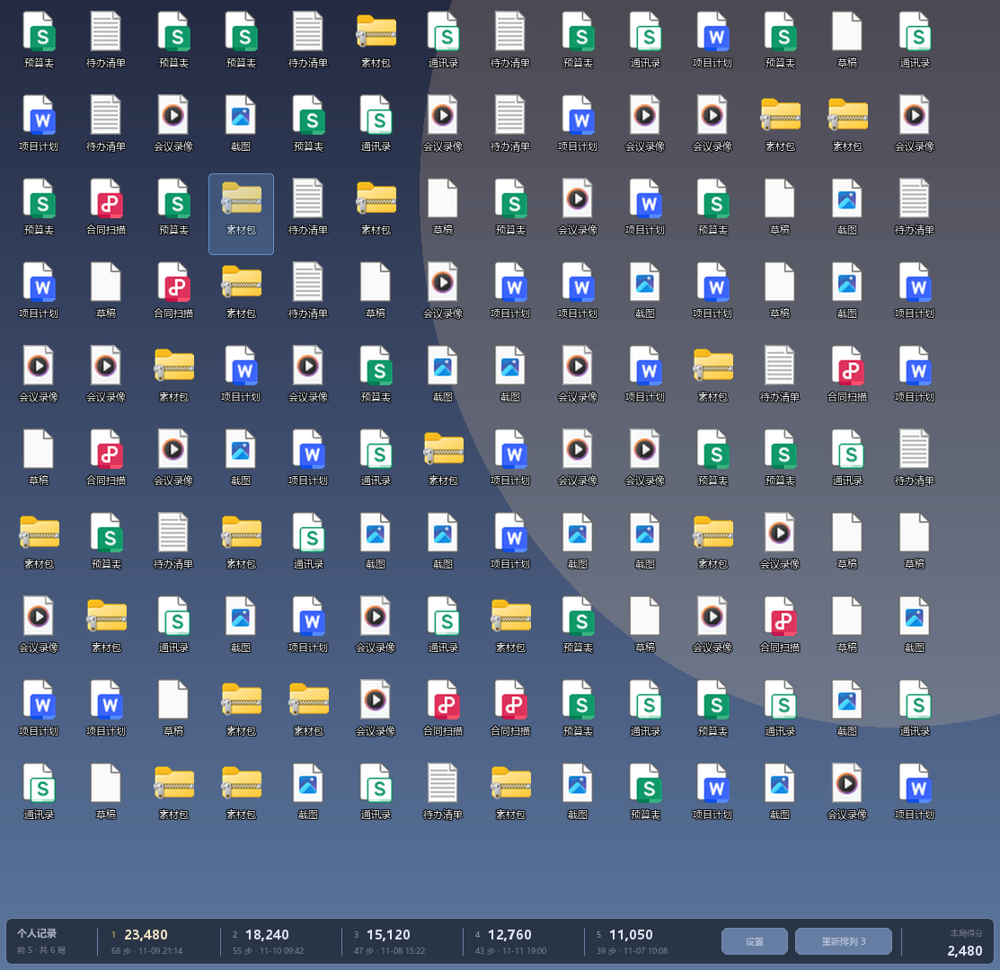

01重画桌面，但绝不碰桌面
取 256px 系统原图：SHGetFileInfoW 拿图标索引 → SHGetImageList(SHIL_JUMBO) → IImageList::GetIcon → GetDIBits 转 32bpp + alpha。 壁纸不重画，而是把整屏壁纸裁出窗口那一块，分界线上像素连续，看不出盖了块窗口。 布局也全取系统真值：SM_CXICONSPACING、纵向 ×1.24 留文字位、启动前 SetProcessDpiAwareness(2)。 真挪图标（LVM_SETITEMPOSITION）视觉更真，但程序崩了会毁掉用户桌面，放弃。
02让 10 种棋子一定分得清
问题：桌面上常有好几个同款白纸文档图标，直接取前 10 个会“分不清哪是哪”。 解法：先做 8×8 特征向量去重（距离 <0.05 视为同款），再按色相分 6 桶，每桶最多 2 个、无彩色桶最多 1 个， 不足 6 种用内置图案补齐 —— 保证十种棋子颜色一定拉得开。
03没有服务器也能双人联机
房主就是服务器：TCP 上跑「4 字节长度 + JSON」帧，UDP 47500 广播自动发现，蓝牙走 RFCOMM（ctypes 调 ws2_32，零第三方库）。 共享棋盘用先到先得而非租约锁 —— 房主天然串行，省掉锁表与“抢输了”的回滚抖动，手感更干脆。 同步传结算后的整盘（140 字节）+ 版本号而不是事件流，避开“两边随机序列分叉”这类查不出的 bug； 双方棋子一致靠房主把图标拼成 960×96 PNG（base64 约 30KB）一次传完。
04设置窗口：能借系统组件就不自己写
打包解释器没带 Tk（tkinter 直接不可用），两套 GUI 又容易抢消息泵 —— 于是开 Win32 原生窗口： pygame 离屏渲染后 StretchDIBits 贴到 WM_PAINT，文字输入交给系统 EDIT 控件， 中文输入法、选区、粘贴全部免费；消息由主循环单线程 PeekMessage 驱动。
